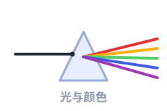
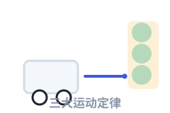
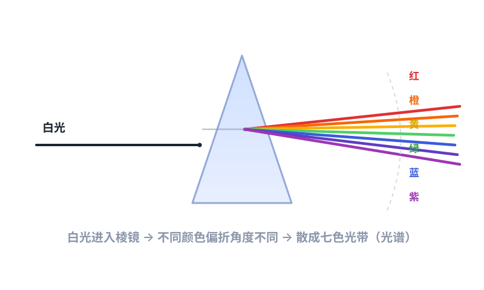
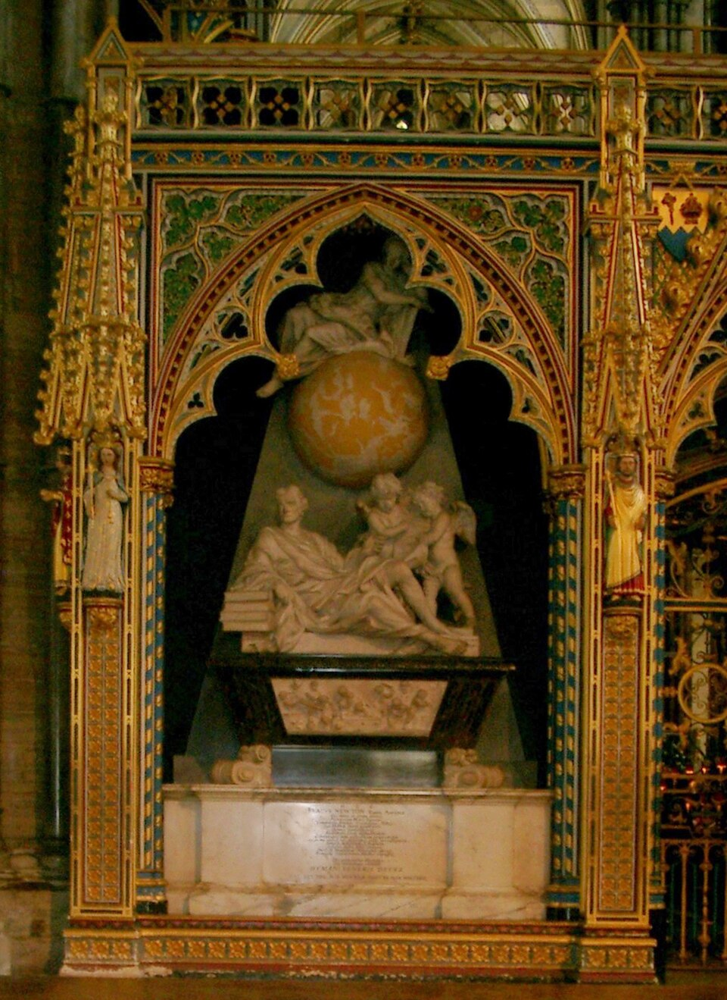

四件事，任何一件都足以让他被写进历史。点开任意一张卡片，可以看到完整的来龙去脉。

他用一块三棱镜证明：白光不是"干净"的光，而是一堆颜色混在一起。彩虹的秘密，就藏在这块玻璃里。
读这一篇 →
为了算清楚"一直在变的东西"，他发明了一套新数学。今天所有搞工程、经济、人工智能的人，都还在用它。
读这一篇 →
让苹果落地的力，和拽住月球的力，是同一个力。这句话听起来平常，却第一次把"天上"和"地上"统一了。
读这一篇 →
物体什么时候动、什么时候停、动多快——三条定律把这一切说得清清楚楚，初中物理课本还在原样教。
读这一篇 →出生：一个没人看好的早产儿
英格兰林肯郡，伍尔索普庄园
牛顿出生在圣诞节那天，是个早产儿，小到据说能装进一升的杯子里。他父亲在他出生前三个月就去世了，母亲在他三岁时改嫁，把他留给外祖母抚养。
没有人会想到，这个从小跟外祖母长大的乡下孩子，将来会改变人类看待世界的方式。
瘟疫停课：史上最著名的"休学两年"
奇迹年 · 微积分、光学、引力同时冒头

1665 年伦敦爆发大瘟疫，剑桥大学停课，23 岁的牛顿收拾行李回到乡下老家。接下来的两年里，他几乎同时开始了三件大事：琢磨"一直在变的东西该怎么算"（后来的微积分）、用三棱镜拆开阳光（光学）、思考让苹果落地的力能不能一直延伸到月球（万有引力）。
他后来自己回忆说："在那两年里，我正处于发明的盛年，对数学和哲学的思考，比此后任何时候都多。"
《光学》出版：三十年前的发现终于成书
系统讲清颜色、反射、折射与"牛顿环"
牛顿早在三十多岁就完成了光学的核心实验，却因为和胡克的争论闹得心力交瘁，一直拖着不发表。等到胡克去世的第二年（1704 年），他才把《光学》写成书出版。
书里不只有棱镜实验，还有他对"牛顿环"的观察、对光的本性的猜测，以及一大堆他承认自己还搞不明白的问题——这些"我不知道"，后来成了别人研究的起点。
葬于西敏寺：一个科学家的最高规格
1727 年 3 月 31 日，享年 84 岁

牛顿终身未婚，晚年由外甥女照顾。他去世后享受国葬待遇，安葬在西敏寺——那是英国给国家英雄的最高礼遇，此前几乎没有科学家享受过。
他墓碑上的拉丁文铭文大意是："让人类欢呼吧，因为曾经有过这样一位为人类增添光彩的人。"
全站所有带虚线下划线的词都可以点击。下面这些也行，试试看。
苹果大概没有砸到他头上。更可靠的说法是：他在老家果园看到苹果落下，于是开始琢磨"这个拉力能延伸多远"。真正厉害的不是苹果，是他问出的那个问题。
事实上，牛顿留下的手稿里，关于炼金术和神学的字数远远超过物理和数学。他也会跟人吵架、记仇、几十年不发表成果。他是天才，但首先是个真人。
那句"站在巨人的肩膀上"不只是客套：他站在哥白尼、第谷、开普勒、伽利略的肩膀上，也被哈雷推着、被胡克激着。科学的进步从来是接力赛。